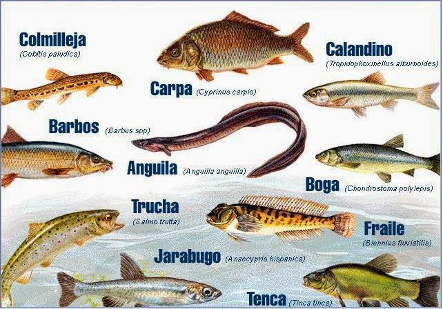
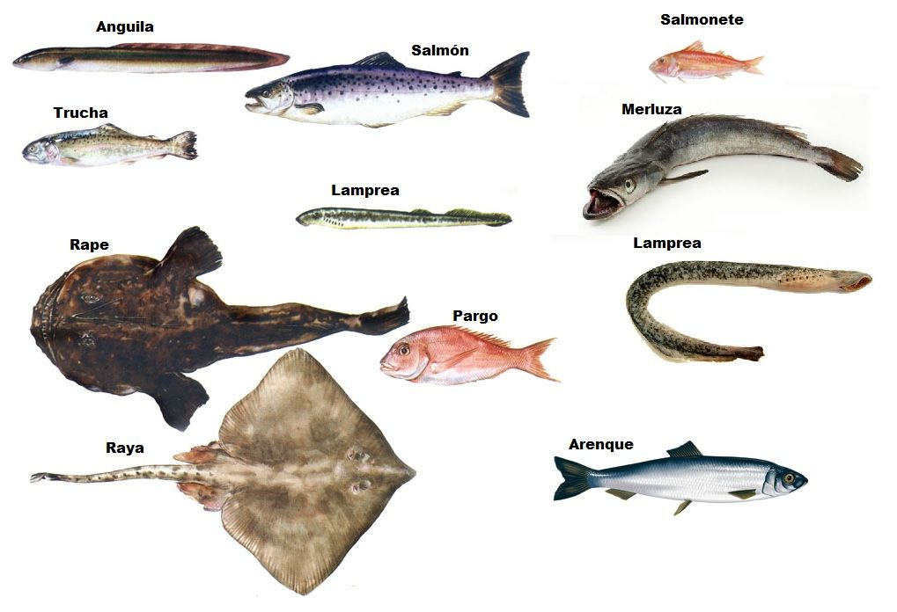
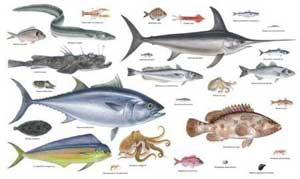

CLASIFICACION DE LOS PECES
Peces condrictios
Peces óseos
Peces cartilaginosos
Pintarroja, Scyliorhinus canícula
Alitán, S. Stellaris
Peregrino, Cetorhinus maximus
Torpedo, Torpedo marmorata, Torpedo nobiliana
Raya de mosaico, Raja undulata
Marrajo, Isurus oxyrhynchus
Caballa
Atún
Sardina
Jurel
Bacalao
Salmón
tiburon blanco
tiburon tigre
tiburon ballena
tiburon angel
tiburon cornudo
tiburon duende



GOOGLE
GOOGLE
GOOGLE